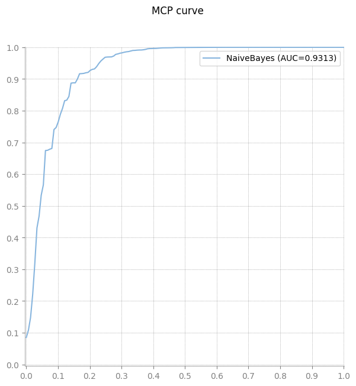
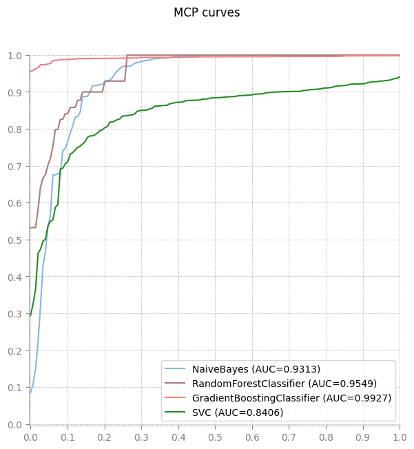
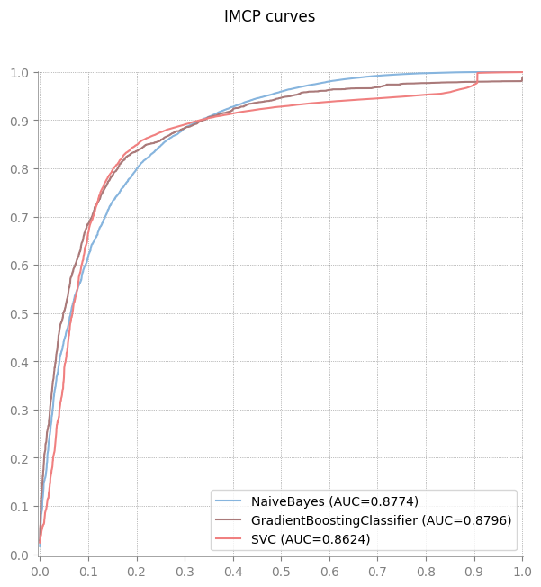

Use cases from the JoSS paper
[1]:
from imcp import mcp_score, plot_mcp_curve, plot_imcp_curve
import pandas as pd
from sklearn.datasets import load_iris
from sklearn.ensemble import RandomForestClassifier, GradientBoostingClassifier
from sklearn.naive_bayes import GaussianNB
from sklearn.svm import SVC
MCP curve
[2]:
X, y = load_iris(return_X_y=True)
algorithm = {'NaiveBayes': GaussianNB()}
algorithm['NaiveBayes'].fit(X, y)
score = {'NaiveBayes': algorithm['NaiveBayes'].predict_proba(X)}
plot_mcp_curve(y, score) # Fig. 3

[3]:
area = mcp_score(y, score['NaiveBayes'])
print("Area under the MCP curve is equal to {}".format(area))
Area under the MCP curve is equal to 0.9312789283247503
[4]:
X, y = load_iris(return_X_y=True)
algorithms = {'NaiveBayes': GaussianNB(),
'RandomForestClassifier': RandomForestClassifier(random_state=42),
'GradientBoostingClassifier': GradientBoostingClassifier(),
'SVC': SVC(probability=True),}
scores = {}
for key in algorithms:
algorithms[key].fit(X, y)
score = algorithms[key].predict_proba(X)
scores[key] = score
plot_mcp_curve(y, scores) # Fig. 4

IMCP curve
[5]:
data = pd.read_csv("exp2_1000.csv", sep = "\t")
y = data["class"].to_numpy()
X = data[["X" , "Y"]].to_numpy()
algorithms = {'NaiveBayes': GaussianNB(),
'GradientBoostingClassifier': GradientBoostingClassifier(),
'SVC': SVC(probability=True),}
scores = {}
for key in algorithms:
algorithms[key].fit(X, y)
score = algorithms[key].predict_proba(X)
scores[key] = score
plot_imcp_curve(y, scores) # Fig. 6
